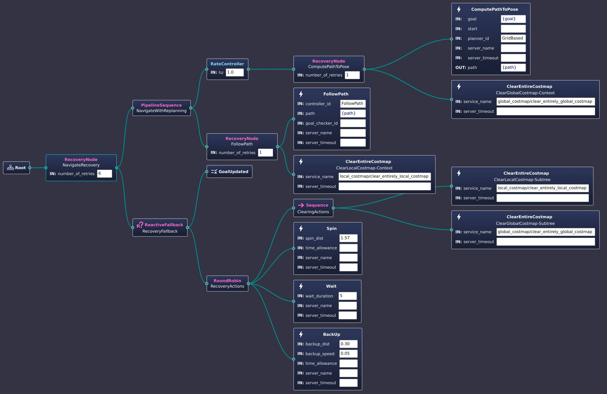

My name is Zhouhao Zhang, I’m currently a research intern at Zhipu AI X-lab under the leadership of Prof. Jie Tang and the guidance of Dr. Tong Yang. My work focuses on intelligent robot research.
Prior to this, I got my Bachelor’s degree in Automation from Beihang University. I was honored with the National Scholarship and got national third place in the 2024 China University Robot Competition (ROBOCON).
Click on the title to view the certificate
I developed the Scene Iconicity Graph to enhance robotic operations, leveraging the zero-shot capabilities of foundation models to improve scene understanding and reasoning. Additionally, I am leading the design of a mobile research robot, equipped with multiple sensors and AI computing resources, aimed at advancing experimentation in embodied AI.
Auto Keystone Correction with Structured Light: This project focused on using local homography and Gray code for calibration. The correction process involved triangulating the depth of key points and fitting the projection plane, while an accelerometer measured the direction of gravity. The homography matrix was computed by correlating key points on the wall with those on the projection screen, allowing for reconstructing the display area. The goal was to maximize the size and sharpness of the inner rectangle within an arbitrary convex projection. A national invention patent for this work is pending.
Auto Keystone Correction Projector with TOF: This project utilized the VL53L5CX multi-point TOF sensor to detect the projection plane. Data stability was enhanced through filtering, and robustness was improved using the Random Sample Consensus (RANSAC) algorithm. The projection system of the ultra-short-throw projector was modeled using an equivalent ideal pinhole.
I was a member of the BR Robotics Team for two years, representing Beihang University in the ROBOCON 2023, RoboMaster 2024, and ROBOCON 2024 competitions. As my skills developed, our team achieved increasingly impressive results. We got national third place in the 2024 China University Robot Competition (ROBOCON).
Auto-shoot Algorithm for Racing Robot in CURC ROBOCON 2023: This algorithm combines LiDAR, wheel odometry, and IMU data for target localization, while a deep learning model identifies and tracks targets. The localization data refines the shooting accuracy by calculating angular deviations, which are then transmitted to the motor driver. The performance in the 2023 CURC ROBOCON competition validated the algorithm’s precision and robustness.
Decision-making algorithm for autonomous robots for ROBOCON 2024: This competition required the development of an advanced decision-making algorithm to win by strategically occupying zones in the competition. A minimax search algorithm with alpha-beta pruning was implemented. Finite state machine was used to manage the robot’s behavior.
Target trajectory analysis with stereo camera : To optimize detection efficiency, a sliding window technique was introduced, reducing computational load by utilizing previous frame recognition data. Triangulation principles calculated 3D coordinates of the target, while Kalman filtering ensured data stability and robustness.

Team entry test: This test, designed for new team members, required camera pose estimation using the Perspective-n-Point (PNP) algorithm. By detecting corner points and establishing correspondences between 2D images and known 3D coordinates, the camera’s trajectory was calculated.
Team trainning: I provided technical training to new members, covering essential topics such as image processing, 3D vision, and introductory courses on Linux and ROS. I contributed to the construction of the first RoboMaster team of Beihang University, I led the team got the Second Prize of 23rd RoboMaster.

I joined Biomechanics and Soft Robotics Lab led by Prof. Li Wen. Under the guidence of Dr. Lei Li, we developed An Aerial–Aquatic Hitchhiking Robot with Remora-Inspired Tactile Sensors and Thrust Vectoring Units. My contributions included debugging flight control systems, assisting in various experiments, and deploying SLAM and autonomous navigation algorithms for the next-generation robots. Equipped with thrust vectoring units and a remora-inspired tactile suction cup, this UAV is capable of transitioning between water and air, performing agile underwater maneuvers, and conserving energy by hitchhiking on surfaces with varying roughness.
I completed my graduation project under the remote guidance of Prof. Qi Dou at the Chinese University of Hong Kong. My project focused on task planning for a 7DOF da Vinci Surgical Robot using demonstration-guided reinforcement learning and policy chains. Additionally, I worked on surgical robot visual manipulation policy learning through world model-based reinforcement learning and developed high-level task planning strategies using large language models and behavior trees.
To enhance factory environment detection, our group designed a mobile intelligent detection robot equipped with multiple sensors. I served as the algorithm engineer, implemented 2D SLAM using the Cartographer algorithm, and developed autonomous navigation and dynamic obstacle avoidance systems using the ROS Navigation stack. I built a factory simulation environment in Gazebo to demonstrate our design.

During my participation in the NUS Artificial Intelligence and Machine Learning Summer Program, I led my team to develop an innovative Seq2Seq model using LSTM for population forecasting, going beyond the basic regression model initially required. Our work earned us winning team, and we received high praise from Prof. Mehul Motani.
I take each experiment seriously, cherish these practical opportunities, and always exceed the teacher’s tasks. This seriousness is also reflected in my grades.
PointNet/PointNet++ point cloud segmentation: I led my team in studying the architectures of PointNet and PointNet++. By leveraging a common backbone with different heads, we successfully executed both classification and segmentation tasks on point clouds. I further explored the T-Net module, experimenting with structural modifications like residual connections to observe different performance outcomes.
Experiments on Eight-Puzzle graph search algorithms: Using BFS, DFS, and A* algorithms, I applied graph search strategies to solve the eight-puzzle problem. Through this experiment, we analyzed the differences in search strategies and performance.
Comparison experiments between CNN and Dense: Inspired by Prof. Li Mu’s Dive into Deep Learning, I constructed various classic neural networks for the MNIST and Fashion MNIST datasets, comparing their performances. I also visualized layer-wise results for LeNet to better understand the mechanics of CNNs. Additionally, I tested LeNet on handwritten Arabic characters.
Experiments on Medical Image segmentation (Liver), (Retinal vessels) In this experiment, I reproduced U-Net using PyTorch and optimized its hyperparameters to train effectively on a small dataset. While working on liver CT segmentation, I tackled the challenge of uneven data distribution by applying normalization, leading to successful results.
EEG-based Motor Imagery Classification: I implemented the EEGNet network to classify motor imagery using EEG signals. Through this experiment, I gained a deep understanding of convolution techniques like group, depth-wise, and point-wise convolutions. My model achieved top rankings in both binary and four-class classification tasks within the class.
Robot path planning experiments I explored the differences in various heuristic functions in robot path planning tasks and summarized my findings in an experimental report.
GMM Built by Expectation-Maximization Algorithm Given a dataset, I used the Expectation-Maximization algorithm to fit a Gaussian mixture model to it and determine the parameters of the distribution.
I’m very lucky to have had a great time with you.


The following images were taken on medium format film.